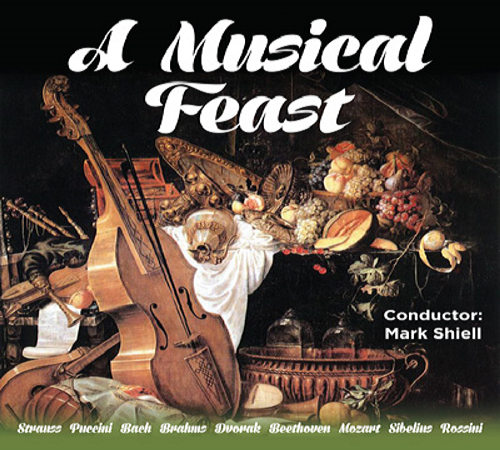
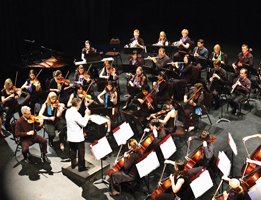
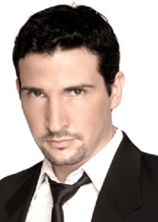

Dreams and Dances
 Richard has maintained a long and distinguished career as bassoonist, music educator, conductor and arranger. A Composition graduate from Sydney University, he was appointed Associate Principal Bassoon with the Sydney Symphony Orchestra as a 20-year-old in 1968, moving to The Canberra School of Music as a foundation member of the Canberra Wind Soloists in 1978. With this renowned quintet, he recorded and toured internationally during a 30-year period, and gave it a unique repertoire with his virtuoso arrangements of large-scale orchestral works. He was for many years Principal Bassoon with the Australian Chamber Orchestra, and appeared on many occasions as guest Principal Bassoon with most of the Symphony Australia Orchestras - also as concerto soloist, and independently as a recitalist. His continuing work as Principal Bassoon with the Canberra Symphony Orchestra dates back to student days of 1965 - 67. If you'd like to hear some of his work as bassoonist, chamber musician, and arranger, you'll find it on YouTube under Canberra Wind Soloists.
Richard has maintained a long and distinguished career as bassoonist, music educator, conductor and arranger. A Composition graduate from Sydney University, he was appointed Associate Principal Bassoon with the Sydney Symphony Orchestra as a 20-year-old in 1968, moving to The Canberra School of Music as a foundation member of the Canberra Wind Soloists in 1978. With this renowned quintet, he recorded and toured internationally during a 30-year period, and gave it a unique repertoire with his virtuoso arrangements of large-scale orchestral works. He was for many years Principal Bassoon with the Australian Chamber Orchestra, and appeared on many occasions as guest Principal Bassoon with most of the Symphony Australia Orchestras - also as concerto soloist, and independently as a recitalist. His continuing work as Principal Bassoon with the Canberra Symphony Orchestra dates back to student days of 1965 - 67. If you'd like to hear some of his work as bassoonist, chamber musician, and arranger, you'll find it on YouTube under Canberra Wind Soloists.
Simultaneously, he has sustained a career as one of Australia's most respected bassoon teachers, at all levels from beginner to post-graduate and professional. In addition he has worked tirelessly in the development of orchestral and ensemble skills with students of all instruments, particularly at the advanced tertiary level. He was for many years a regular tutor and conductor at the Australian Youth Orchestra's National Music Camps. He has taught over many years in south-east Asia.
His work as a conductor is well-known, particularly in Canberra. He was Conductor and Musical Director of the Canberra Youth Orchestra from 1980 - 1990, greatly broadening its repertoire and general endeavour, and led it on three highly-successful and widely-acclaimed European tours. His Canberra contribution has included development of and much work with the School of Music Orchestra, Canberra Opera, Canberra Philharmonic Society, thirteen-years as Musical Director of The Llewellyn Choir (with development of its accompanying professional ensemble, The Canberra Chamber Orchestra), and three years as Musical Director of The Oriana Chorale.
His numerous conducting activities outside of Canberra have included the foundation and development of the Barrier Reef Orchestra, with which he continues his association as Artistic Advisor and frequent conductor.
His 35-year career at the Canberra (now ANU) School of Music played a significant part in the creation of its erstwhile international reputation. Awards have included 1986 Canberran of the Year, Advance Australia, Sounds Australian, and National Critics' Circle awards. In 1992 he was granted an Order of Australia Medal, for services to Music and Music Education, particularly for his work with the Canberra Youth Orchestra. In 2013, he was elected President of the Australian Double Reed Society.
A Musical Feast
The Barrier Reef Orchestra’s final concert for 2015 is A Musical Feast.
The conductor is Mark Shiell making a return visit to Townsville.
The concert will include music from many different composers including Bach, Brahms and Strauss and will feature soprano, Julie O’Connor who will sing numbers from Puccini and Dvorak.
World Music Concert
As you travel the globe one of the standout features of so many different countries is undoubtedly their music. This concert saves on the shoe leather and brings an eclectic mix of music from all over the world to Townsville.
A unique performance conceptualised and developed here in Townsville by the Barrier Reef Orchestra highlighting the stunning diversity of cultural music from around the globe. Featuring the Orchestra and several international artists performing music from Asia, the Americas, the British Isles, Europe and of course Australia.
So pack away the passport take the trip of a life time and never leave home. Join Townsville’s very own Barrier Reef Orchestra in their 15th year for a World Music Concert.
Special Guests -
Adam Lopez – Developed his multi-octave voice while studying opera in Australia
Domenico Taraborrelli – one of Brisbane’s most experienced and versatile multicultural entertainers
David Hudson – musician, entertainer, artist and actor
Last Night at the Proms
Featuring The Company Singers
Arranged and Conducted by Richard McIntyre
Saturday, 1st November 2014 at Townsville Civic Theatre